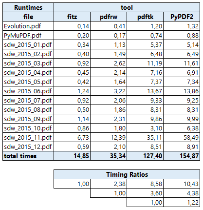
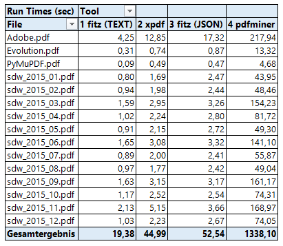
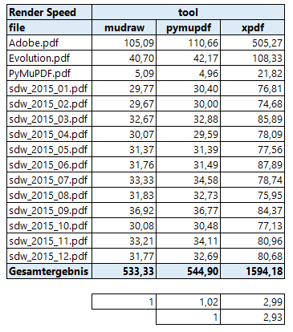

Appendix 1: Performance¶
We have tried to get an impression on PyMuPDF’s performance. While we know this is very hard and a fair comparison is almost impossible, we feel that we at least should provide some quantitative information to justify our bold comments on MuPDF’s top performance.
Following are three sections that deal with different aspects of performance:
- document parsing
- text extraction
- image rendering
In each section, the same fixed set of PDF files is being processed by a set of tools. The set of tools varies - for reasons we will explain in the section.
Here is the list of files we are using. Each file name is accompanied by further information: size in bytes, number of pages, number of bookmarks (toc entries), number of links, text size as a percentage of file size, KB per page, PDF version and remarks. text % and KB index are indicators for whether a file is text or graphics oriented: e.g. Adobe.pdf and PyMuPDF.pdf are clearly text oriented, all other files contain many more images.

Part 1: Parsing¶
How fast is a PDF file read and its content parsed for further processing? The sheer parsing performance cannot directly be compared, because batch utilities always execute a requested task completely, in one go, front to end. pdfrw too, has a lazy strategy for parsing, meaning it only parses those parts of a document that are required in any moment.
In order to yet find an answer to the question, we therefore measure the time to copy a PDF file to an output file with each tool, and doing nothing else.
These were the tools
All tools are either platform independent, or at least can run both, on Windows and Unix / Linux (pdftk).
Poppler is missing here, because it specifically is a Linux tool set, although we know there exist Windows ports (created with considerable effort apparently). Technically, it is a C/C++ library, for which a Python binding exists - in so far somewhat comparable to PyMuPDF. But Poppler in contrast is tightly coupled to Qt and Cairo. We may still include it in future, when a more handy Windows installation is available. We have seen however some analysis, that hints at a much lower performance than MuPDF. Our comparison of text extraction speeds also show a much lower performance of Poppler’s PDF code base Xpdf.
Image rendering of MuPDF also is about three times faster than the one of Xpdf when comparing the command line tools mudraw of MuPDF and pdftopng of Xpdf - see part 3 of this chapter.
| Tool | Description |
|---|---|
| PyMuPDF | tool of this manual, appearing as “fitz” in reports |
| pdfrw | a pure Python tool, is being used by rst2pdf, has interface to ReportLab |
| PyPDF2 | a pure Python tool with a very complete function set |
| pdftk | a command line utility with numerous functions |
This is how each of the tools was used:
PyMuPDF:
doc = fitz.open("input.pdf")
doc.save("output.pdf")
pdfrw:
doc = PdfReader("input.pdf")
writer = PdfWriter()
writer.trailer = doc
writer.write("output.pdf")
PyPDF2:
pdfmerge = PyPDF2.PdfFileMerger()
pdfmerge.append("input.pdf")
pdfmerge.write("output.pdf")
pdfmerge.close()
pdftk:
pdftk input.pdf output output.pdf
Observations
These are our run time findings (in seconds, please note the European number convention: meaning of decimal point and comma is reversed):

If we leave out the Adobe manual, this table looks like
PyMuPDF is by far the fastest: on average 4.5 times faster than the second best (the pure Python tool pdfrw, chapeau pdfrw!), and almost 20 times faster than the command line tool pdftk.
Where PyMuPDF only requires less than 13 seconds to process all files, pdftk affords itself almost 4 minutes.
By far the slowest tool is PyPDF2 - it is more than 66 times slower than PyMuPDF and 15 times slower than pdfrw! The main reason for PyPDF2’s bad look comes from the Adobe manual. It obviously is slowed down by the linear file structure and the immense amount of bookmarks of this file. If we take out this special case, then PyPDF2 is only 21.5 times slower than PyMuPDF, 4.5 times slower than pdfrw and 1.2 times slower than pdftk.
If we look at the output PDFs, there is one surprise:
Each tool created a PDF of similar size as the original. Apart from the Adobe case, PyMuPDF always created the smallest output.
Adobe’s manual is an exception: The pure Python tools pdfrw and PyPDF2 reduced its size by more than 20% (and yielded a document which is no longer linearized)!
PyMuPDF and pdftk in contrast drastically increased the size by 40% to about 50 MB (also no longer linearized).
So far, we have no explanation of what is happening here.
Part 2: Text Extraction¶
We also have compared text extraction speed with other tools.
The following table shows a run time comparison. PyMuPDF’s methods appear as “fitz (TEXT)” and “fitz (JSON)” respectively. The tool pdftotext.exe of the Xpdf toolset appears as “xpdf”.
- extractText(): basic text extraction without layout re-arrangement (using
GetText(..., output = "text")) - pdftotext: a command line tool of the Xpdf toolset (which also is the basis of Poppler’s library)
- extractJSON(): text extraction with layout information (using
GetText(..., output = "json")) - pdfminer: a pure Python PDF tool specialized on text extraction tasks
All tools have been used with their most basic, fanciless functionality - no layout re-arrangements, etc.
For demonstration purposes, we have included a version of GetText(doc, output = "json"), that also re-arranges the output according to occurrence on the page.
Here are the results using the same test files as above (again: decimal point and comma reversed):
Again, (Py-) MuPDF is the fastest around. It is 2.3 to 2.6 times faster than xpdf.
pdfminer, as a pure Python solution, of course is comparatively slow: MuPDF is 50 to 60 times faster and xpdf is 23 times faster. These observations in order of magnitude coincide with the statements on this web site.
Part 3: Image Rendering¶
We have tested rendering speed of MuPDF against the pdftopng.exe, a command lind tool of the Xpdf toolset (the PDF code basis of Poppler).
MuPDF invocation using a resolution of 150 pixels (Xpdf default):
mutool draw -o t%d.png -r 150 file.pdf
PyMuPDF invocation:
zoom = 150.0 / 72.0
mat = fitz.Matrix(zoom, zoom)
def ProcessFile(datei):
print "processing:", datei
doc=fitz.open(datei)
for p in fitz.Pages(doc):
pix = p.getPixmap(matrix=mat)
pix.writePNG("t-%s.png" % p.number)
pix = None
doc.close()
return
Xpdf invocation:
pdftopng.exe file.pdf ./
The resulting runtimes can be found here (again: meaning of decimal point and comma reversed):
- MuPDF and PyMuPDF are both about 3 times faster than Xpdf.
- The 2% speed difference between MuPDF (a utility written in C) and PyMuPDF is the Python overhead.